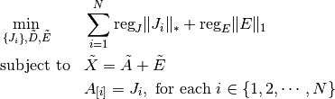

tensorly.contrib.sparse.decomposition.robust_pca
-
robust_pca(X, mask=None, tol=1e-06, reg_E=1, reg_J=1, mu_init=0.0001, mu_max=10000000000.0, learning_rate=1.1, n_iter_max=100, verbose=1) Robust Tensor PCA via ALM with support for missing values
Decomposes a tensor X into the sum of a low-rank component D and a sparse component E.Parameters: - Xndarray
tensor data of shape (n_samples, N1, …, NS)
- maskndarray
array of booleans with the same shape as X should be zero where the values are missing and 1 everywhere else
- tolfloat
convergence value
- reg_Efloat, optional, default is 1
regularisation on the sparse part E
- reg_Jfloat, optional, default is 1
regularisation on the low rank part D
- mu_initfloat, optional, default is 10e-5
initial value for mu
- mu_maxfloat, optional, default is 10e9
maximal value for mu
- learning_ratefloat, optional, default is 1.1
percentage increase of mu at each iteration
- n_iter_maxint, optional, default is 100
maximum number of iteration
- verboseint, default is 1
level of verbosity
Returns: - (D, E)
Robust decomposition of X
- DX-like array
low-rank part
- EX-like array
sparse error part
Notes
The problem we solve is, for an input tensor
 :
: